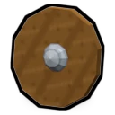

Katherine's General Goods
Katherine's General Goods is  Katherine's shop. Potions and basic armor for your first trips out.
Katherine's shop. Potions and basic armor for your first trips out.
Stock
| Item | Price |
|---|---|
 Minor Healing Potion Minor Healing Potion | 2,500 Gold |
 Wooden Buckler | 225 Gold |
 Leather Cap Leather Cap | 150 Gold |
 Leather Tunic Leather Tunic | 275 Gold |
Every shop also buys almost anything for its sell price; each item's page says what it sells for.